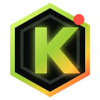

ВСТУПИ В GOOGLE‑ГРУППУ
Нажми кнопку, вступи в группу и вернись на эту страницу.
ВСТУПИТЬ В ГРУППУ
KONTRA SERVER · CLOSED TESTНужно выполнить два простых шага. Аккаунт на сайте KONTRA создавать не требуется.
Важно: обе ссылки открывай под одним и тем же Google‑аккаунтом.
Нажми кнопку, вступи в группу и вернись на эту страницу.
ВСТУПИТЬ В ГРУППУНа странице Google нажми «Стать участником тестирования», затем установи приложение из Google Play.
СТАТЬ ТЕСТЕРОМ И УСТАНОВИТЬОткрой приложение хотя бы один раз и не выходи из тестирования минимум 14 дней. Желательно открыть его ещё несколько раз в течение этого срока.
Проверь, что в группе и Google Play выбран один аккаунт. Подожди 2–5 минут и открой вторую кнопку снова. Если ссылка открылась внутри Telegram или WhatsApp, выбери «Открыть в Chrome».